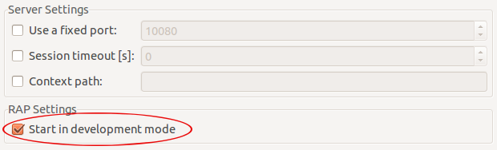

Here's a list of the most noteworthy things in the RAP 2.0 M4 milestone build which is available for download since December 21, 2012.
Based on the Client API that has been introduced in M2, some new client services have been introduced:
If a custom component requires additional JavaScript code on the client, the JavaScriptLoader can be used to load a JavaScript file just before the component uses it. The JavaScriptLoader will ensure that the file is loaded only once, even if require() is called subsequently.
JavaScriptLoader loader = RWT.getClient().getService( JavaScriptLoader.class ); loader.require( "rwt-resources/myComponent/MyFile.js" );
The ClientInfo service provides additional information about the client that is connected to the current UI session. In this version, the service provides the client's locale and its timezone offset in minutes. Unfortunately, it's not possible to obtain the actual timezone region from the browser.
ClientInfo clientInfo = RWT.getClient().getService( ClientInfo.class ); int timezoneOffset = clientInfo.getTimezoneOffset(); Locale[] locales = clientInfo.getLocales();
The UrlLauncher service allows to open any URL (websites, files, "mailto", etc.) without influencing or leaving the application. Popup blocker may ask the user for permission before a new window is opened.
UrlLauncher launcher = RWT.getClient().getService( UrlLauncher.class ); launcher.openURL( "https://www.eclipse.org/" ); launcher.openURL( "mailto:someone@nowhere.org" );
Please use this new client service instead of the deprecated ExternalBrowser.
The BrowserNavigation service provides support for the browser's back/forward buttons and deep linking. It's a complete replacement for the removed class BrowserHistory.
BrowserNavigation navigation = RWT.getClient().getService( BrowserNavigation.class ); navigation.pushState( "cars", "Car selection" );
The prefix “I” in interface names like IEntryPoint is a heritage from the Eclipse platform. This deviates from the naming pattern used in SWT and other libraries, and also from the Java class library. Since it is not even used consistently in RAP, we're removing the prefix from all interfaces.
The class Graphics had been used to create shared instances of resources like Color and Font before resource constructors were introduced in 1.3. This practice is problematic because instances created using these methods throw an exception when trying to dispose them. Moreover, they cannot be garbage collected. In RAP 2.0, resources should only be created using the constructors of Color, Font, Cursor, and Image.
Graphics also provided methods for test size measurement. We expect that these methods are hardly used by application code and can be replaced by SWT's GC API. To measure a string in a given font, create a GC, set the font, and call the GC methods stringExtent or textExtent. Don't forget to dispose of the GC afterwards.
The service store is used internally by the framework to store data in the scope of a request.
Application developers shouldn't really need this store anymore.
If an application needs to store any information in the request scope, it should use the
request object directly, i.e. RWT.getRequest().setAttribute(...).
When working with RAP, you have to deal with two different types of sessions: the servlet container's HttpSession and RAP's UISession (formerly known as session store). Both sessions have a different scope and a different purpose. In recent projects we've noticed that the relationship between the HTTP session and RAP's “session store” led to confusion. By renaming the session store to UI session we hope to make it more clear that both are sessions with a different scope and meaning. Here's some background:
The HTTP session is managed by the servlet container which recognizes the user with the help of a Cookie or URL rewriting. It has a configurable timeout, after which a user has to sign in again. The HTTP session is the place to store user-specific information.
The UI session is built on top of the HTTP session, but has a shorter lifetime. A new UI session is started every time a user accesses an entrypoint and it lives as long this UI is being used. When the user accesses another entrypoint, this results in a new UISession, but the HttpSession will be the same. The UI session is the place to store information that is related to the current instance of an application's UI. It can now also be used to access UI-session-scoped instances such as the Client and the locale.
The interface ISessionStore has been renamed to UISession. The types SessionStoreListener and SessionStoreEvent have been renamed accordingly.
In addition to the get/setAttribute methods, UISession also provides access
to the Client instance and the Locale.
Actually, RWT.getClient() is now a shortcut for
RWT.getUISession().getClient().
The same is true for RWT.getLocale() and RWT.setLocale( locale ).
The new ApplicationContext represents the running instance of a RAP application, it is shared by all UI sessions. This interface replaces IApplicationStore, it can be used to store shared data, and also to obtain application-scoped services such as the resource manager.
Just like the UISession is built on the servlet container's HttpSession, the ApplicationContext is built on the ServletContext, and its life cycle is also bound to lifetime of the servlet context. We chose the name ApplicationContext to highlight this analogy.
The interface IApplicationStore has been renamed to ApplicationContext.
An instance can be acquired from RWT.getApplicationContext() which replaces
the old method RWT.getApplicationStore().
In addition to the get/setAttribute methods, ApplicationContext has accessor
methods for the resource manager and the service manager.
Actually, RWT.getResourceManager() is now simply a shortcut for
RWT.getApplicationContext().getResourceManager().
The interface ServiceHandler has been changed. The service method now provides two parameters request and response to the implementation. Developers don't have to obtain the request and response objects from static methods anymore.
The ServiceManager has got a new method getServiceHandlerUrl( String ). Developers should use this new method to obtain the URL to access a service handler instead of assembling the URL manually.
The class UICallBack represents RAP's mechanism to “push” UI updates to the client when these updates occur outside of a request. It can be activated and deactivated using an ID, in order to allow different parties to activate the the push independently. We noticed that users had trouble to understand the idea behind these IDs, so we tried to come up with a new API.
We chose to call the system server push, which is the common name for technologies that simulate a push update from an HTTP server to a client. To activate the server push, you can create a new ServerPushSession and start it. The push session can be stopped when it is no longer needed (in contrast to UICallBack, this can now be done from any thread). As long as there are any push sessions running, the framework will keep the server push system active.
As mentioned above, the BrowserHistory and related classes have been replaced by the more general BrowserNavigation client service. All features of BrowerHistory are retained, view the migration guide for a code example.
Besides the new name, there is one important change: The BrowserNavigationListener (formerly BrowserHistoryListener) is now informed of all changes in the URL's fragment identifier (the characters following the “#”), even if the change was not triggered by the history back/forward buttons (bug 394401).
You use the BrowserNavigation to navigate between states in your application. With pushState(), you push a new state to the (history) stack, and navigation events provide their state in getState(). This new terminology will allows us to add more navigation features to this service that are not directly related to history.
In M3, we reversed the relationship between entrypoints and branding extensions, which also requires a change for applications that use the IApplication interface for single-sourcing. Our solution was to support the parameters path and brandingId added to application extensions. It turned out that this approach lead to problems (bug 394805) so we had to change it again.
Application extensions can now be referenced by an entrypoint extension using the new parameter applicationId. To make an existing application extension available in RAP, you have to create a new entrypoint extension and specify the id of the application extension instead of an EntryPoint class:
<extension point="org.eclipse.rap.ui.entrypoint">
<entrypoint id="example.application.entrypoint"
path="/example"
brandingId="example.branding"
applicationId="example.application" />
</entrypoint>
</extension>
This allows to use existing application extensions without modification. Path and branding can be specified in the same way as for all other entrypoints.
During development, it's recommended to start RAP in development mode. In this mode, the JavaScript for the web client is not compressed and potential client-side errors will not be caught. This new setting replaces the old clientLibraryVersion, which has been used for this purpose before. In the RAP Launcher, you'll find a new option to enable the development mode:

In OSGi launch configurations, please replace the VM parameter
-Dorg.eclipse.rwt.clientLibraryVersion=DEBUG with
-Dorg.eclipse.rap.rwt.developmentMode=true.
This list shows all bugs that have been fixed for this milestone build.
The above features are just the ones that are new since the last milestone build. Summaries for earlier builds:
To assist you with the migration from RAP 2.x (or 1.x) to 3.0, we provide a migration guide.
 Copyright © 2025 The Eclipse Foundation. All Rights Reserved.
Copyright © 2025 The Eclipse Foundation. All Rights Reserved.